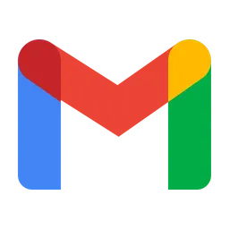

About Me
Hi there, I’m Chaitra S
A Senior DevOps Engineer with a passion for automation, secure CI/CD practices, and building scalable infrastructure. With over 3.5 years of experience, I specialize in crafting robust DevOps pipelines, managing cloud-native infrastructure, and leading GitHub Enterprise governance in highly regulated environments.
What I Do
- Deliver software faster with automated pipelines
- Maintain secure and compliant workflows using GitHub Actions and SAST tools
- Design modular, reusable CI/CD templates for scale
- Build cloud-native environments using Terraform, Docker, Kubernetes, and Ansible
- Ensure governance and traceability with advanced GitHub admin practices
My Core Tools & Platforms
Cloud: AWS (EC2, S3, IAM), GCP (GKE, Cloud Run, IAM)
DevOps: GitHub Actions, Jenkins, Terraform, Ansible, Docker, Kubernetes
Scripting: Python, Bash, YAML, Groovy
Governance: GitHub Monorepo Management, CODEOWNERS, Triple-Gate Approval, Audit-Friendly CI/CD
My Work Philosophy
“Automation should be meaningful, not just fast. Secure by design. Scalable by structure.”
I thrive in fast-paced, compliance-heavy environments where cross-functional collaboration and continuous improvement are key. I value clean, reusable code and believe DevOps is as much about people and processes as it is about tools.
How I Work
- I’m an ambivert who loves meaningful problem-solving conversations
- I iterate, test, and adapt workflows for developer efficiency
- I champion DevSecOps practices with integrated security and governance
- I build developer-friendly CI/CD platforms that scale with business needs
Let’s Connect
I'm always open to opportunities to collaborate, innovate, and learn.
 |
 |
|